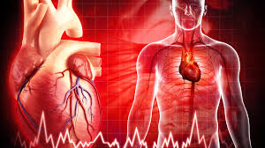

Dolaşım Sistemi
Dolaşım sistemi; kalp, kan ve kan damarlarından oluşur. Oksijen, besin maddeleri, hormonlar ve atık maddelerin vücutta taşınmasını sağlar.
Bu sistem sayesinde hücreler ihtiyaç duyduğu maddeleri alır, zararlı maddeler ise ilgili organlara taşınarak vücuttan uzaklaştırılır.
Dolaşım Sisteminin Yapıları
Dolaşım sistemi üç temel yapıdan oluşur: kalp, kan ve damarlar. Bu yapılar uyum içinde çalışarak vücudun sağlıklı şekilde işlemesini sağlar.
Görevleri
- Kalp: Kanı vücuda pompalayan organdır.
- Kan: Oksijen, besin ve hormonları taşır.
- Damarlar: Kanın vücut içinde dolaşmasını sağlar.
- Atık maddelerin ilgili organlara taşınmasını sağlar.
Dolaşım Sisteminin Önemi
Dolaşım sistemi olmadan hücrelere oksijen ve besin ulaştırılamaz. Bu nedenle dolaşım sistemi, yaşamın devamı için hayati öneme sahiptir.
Dolaşım Sistemi Yapıları ve Görevleri (Özet Tablo)
| Yapı | Görevi |
|---|---|
| Kalp | Kanın vücuda pompalanmasını sağlar |
| Kan | Oksijen, besin ve hormonları taşır |
| Damarlar | Kanın vücut içinde dolaşmasını sağlar |
Sık Sorulan Sorular
Dolaşım sistemi neden önemlidir?
Çünkü hücrelerin ihtiyaç duyduğu maddeleri taşır ve atık maddeleri uzaklaştırır.
Dolaşım sistemi hangi yapılardan oluşur?
Kalp, kan ve damarlar dolaşım sistemini oluşturur.
Kısa Özet
Dolaşım sistemi; kalp, kan ve damarlardan oluşur. Vücutta madde taşınmasını sağlayarak yaşamın devamına katkı sağlar.
← Ana Sayfaya Dön